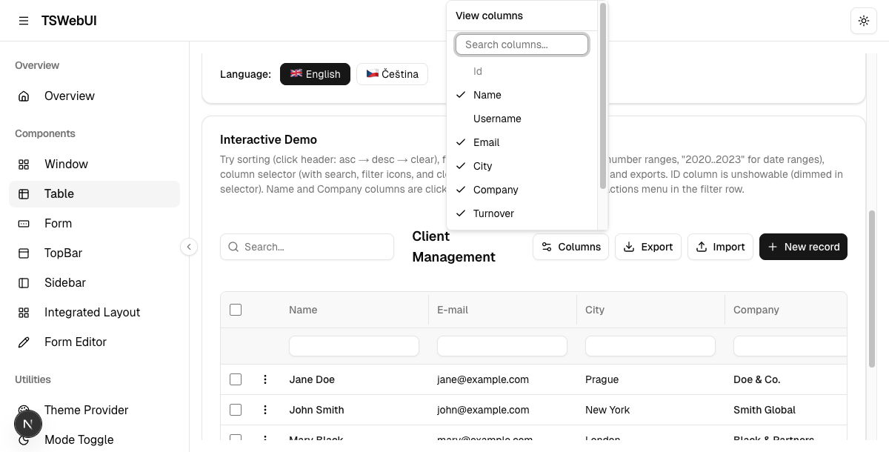
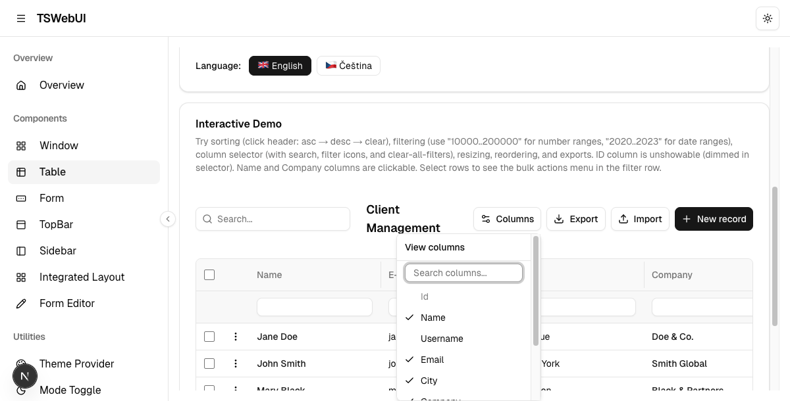
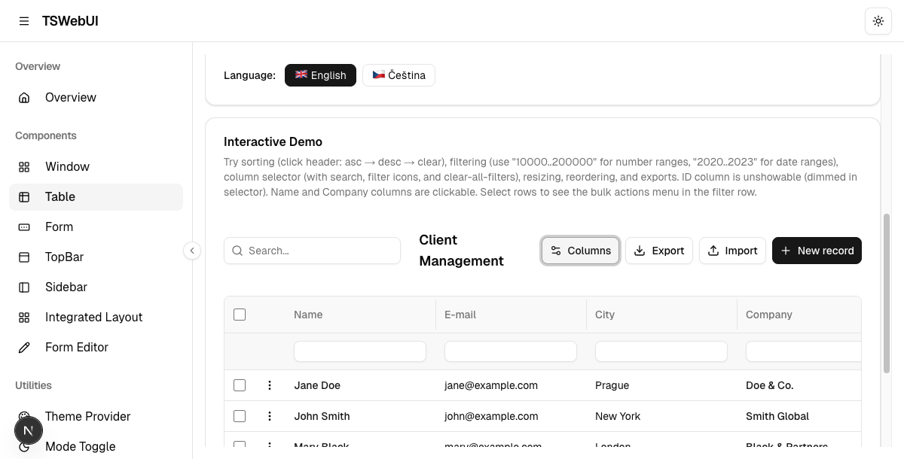
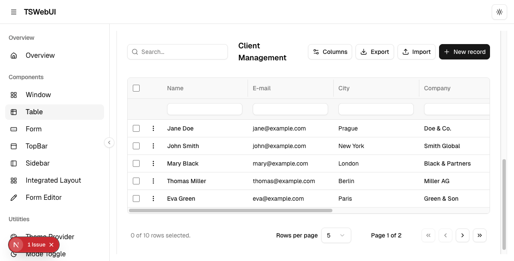
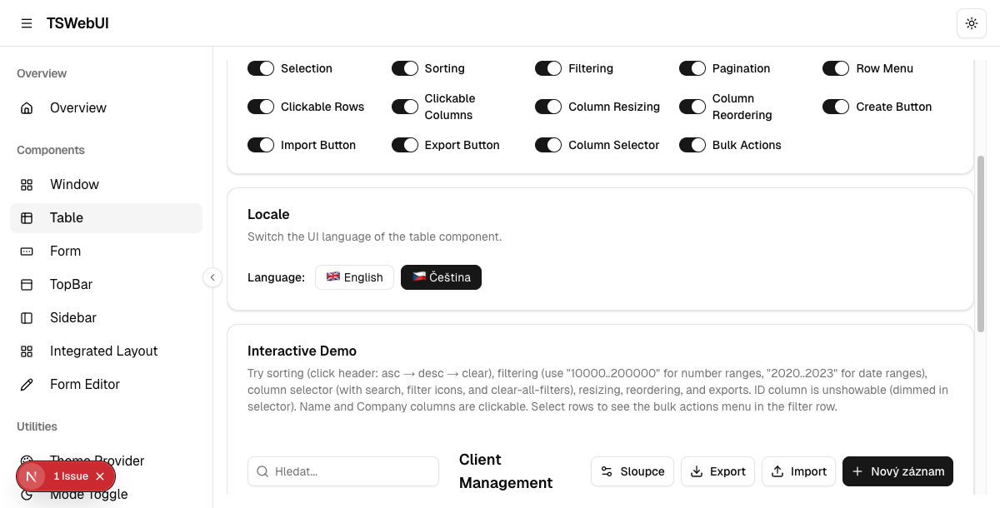
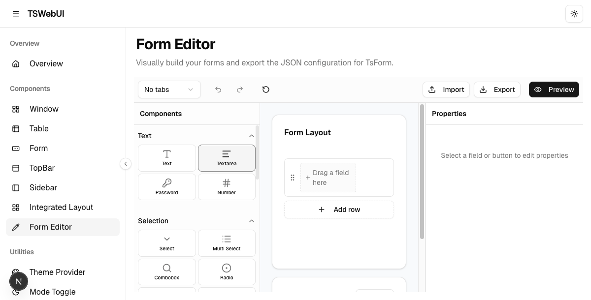
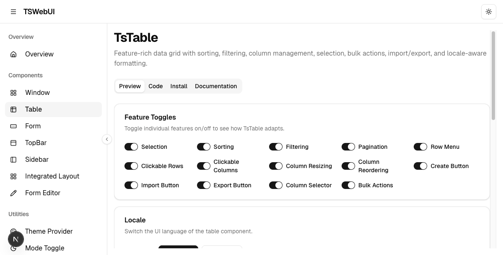
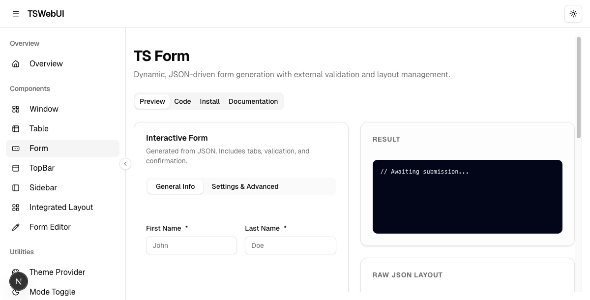

Generated: 2025-04-15 · Branch: main · All 6 items from TOFIX.md
Escape now clears the search instead of closing the dropdown.
A second Escape (on an empty field) closes the dropdown normally.
onEscapeKeyDown on DropdownMenuContent with e.preventDefault() — the correct
Radix UI API (Radix fires at document level via capture, bypassing React's synthetic stopPropagation).



src/components/ts-web-ui/ts-table/ts-table-toolbar.tsxminSize now accounts for: label width (title.length × 7 px) +
sort indicator (22 px if sortable) + reorder controls (34 px if reordering enabled) + cell padding (24 px).
Columns can no longer be resized below the point where the header content overflows.
The calculation is performed per-column at definition time so it adjusts when column ordering changes the number of visible reorder arrows.

labelPx = def.title.length * 7 added to minSizesrc/components/ts-web-ui/ts-table/columns.tsxsrc/components/ts-web-ui/locale/ — English (default) and Czech translations.
Locale is set via <TsLocaleProvider strings={cs}> or strings={en}.
formEditor section
including fieldTypeLabels (21 types) and fieldGroupLabels (6 groups).


| Section | Keys | Consumers |
|---|---|---|
table | ~50 keys | TsTable (all features) |
form | ~35 keys | TsForm (all widgets) |
formEditor | ~120 keys | TsFormEditor (all panels) |
LLM/skills/tswebui/SKILL.md updated with:
formEditor key count updated: "~30 keys" → "~120 keys"TsFormEditor added to Table of Contents## TsFormEditor section: install, usage, features, keyboard shortcuts, store API, locale breakdownuseCustomValue renamed to customValueAdd (Biome hook-naming conflict resolved)biome.json created — migrated from .prettierrc.json + eslint.config.mjs (57 rules)eslint.config.mjs, .prettierrc.json, .prettierignoreeslint, eslint-config-next, prettier, @trivago/prettier-plugin-sort-importspackage.json scripts: added check, check:write, ci:check; removed lint, format.lintstagedrc.json: now biome check --write.github/workflows/ci-cd.yml: replaced 2 steps with single pnpm exec biome cisrc/app/globals.css excluded (Tailwind v4 syntax incompatible with Biome CSS parser)$ pnpm exec biome ci --reporter=summary src/
Checked 147 files in 110ms. No fixes applied.
Found 12 warnings. ← all pre-existing (exhaustive-deps, aria)
← EXIT CODE: 0 ✓
pnpm exec tsc --noEmit — 0 errorslint-staged now runs biome check --writepnpm exec biome ci step in .github/workflows/ci-cd.yml/, /components/ts-table, /components/ts-form, /form-editor)$ pnpm run test
Test Files 22 passed (22)
Tests 153 passed (153)
Duration 14.72s

